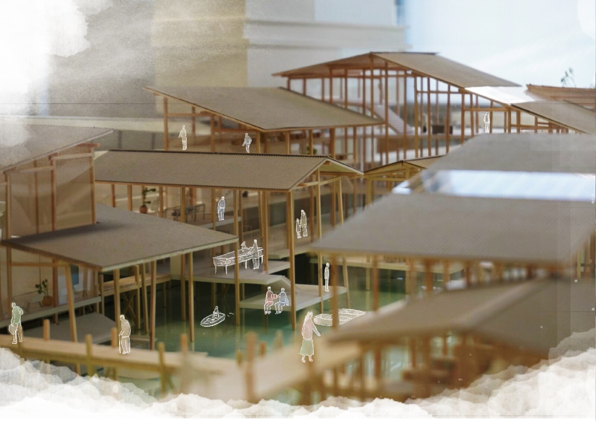
Sotobori is the outer moat of Edo Castle — one of the largest castles in the world. It served as a defense facility to protect the castle from outside enemies, while simultaneously delivering water from Tamagawa-josui to Edo. As a vital waterway infrastructure, it once connected people and goods across the city.
外濠は、世界最大規模の城のひとつである江戸城の外堀。外部の敵から城を守る防衛施設としての役割を担う一方、多摩川上水の水を江戸に届ける水運インフラとして、人と物資を都市全体に運んでいた。
During Japan's rapid economic growth, as transport shifted from boats to cars, Sotobori was gradually filled in. Roads and high-rise buildings replaced the waterfront. Water circulation ceased, and water quality deteriorated dramatically — a vital artery of Tokyo lost to the city's own expansion.
高度経済成長期、物流の基盤が船から車に移行するとともに外濠は埋め立てられ、道路や高層ビルへと変貌した。水の流れが失われ水質悪化が進行。東京の重要な動脈が、都市自身の拡張によって失われていった。
The concept is to design a museum that uses the urban landscape of Sotobori as a work of art. Three intervention points along the waterway — Iidabashi, Nihonbashi River, and Akihabara (Kanda River) — are connected by boat, creating a new urban circuit that restores Sotobori as living infrastructure.
外濠の都市景観を「作品」と見立てた博物館を設計する。飯田橋・日本橋川・秋葉原（神田川）の三拠点を船で結び、外濠を生きたインフラとして復活させる新たな都市回路をつくる。
1. Iidabashi — Sotobori Museum & Boat Landing. The former Iida Moat, now a culvert, is revived as a museum whose section cuts through time: stone walls, the underground culvert, and water brought back to the surface.
2. Nihonbashi River — Rest Area & Dock. A riverside platform that makes the stone walls and high-way underbelly visible from the water — layers of the city's infrastructure exposed as landscape.
3. Kanda River (Akihabara) — Canoe Rental & Dock. Floating slabs that rise and fall with the tide, making the act of entering the water a spatial event that changes with season and time.
1. 飯田橋 — 外濠博物館 + 船着場。かつての飯田濠（現在は暗渠）を断面で時代を貫く博物館として再生。石垣・暗渠・水面が重なる空間体験。
2. 日本橋川 — 休憩所 + ドック。護岸と高架下が水面から見える親水デッキ。都市インフラの断層を景観として読み替える。
3. 神田川（秋葉原） — カヌーレンタル + ドック。水位によって高さが変わるフロートスラブ。水に入るという行為が季節と時間によって変化する空間的事象となる。
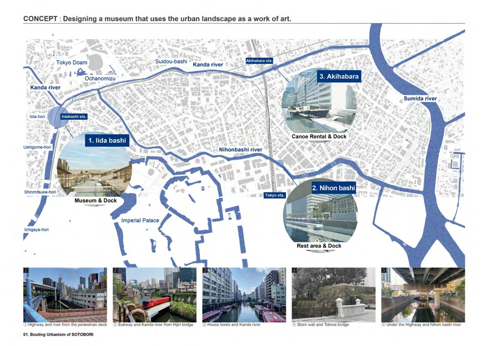
Concept map — three intervention points along the waterway networkコンセプト図 — 水系ネットワーク上の三拠点
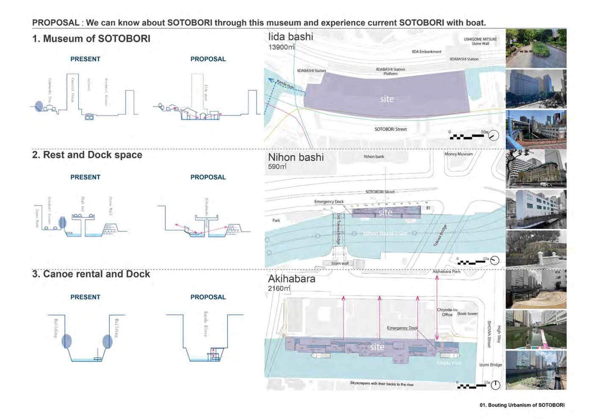
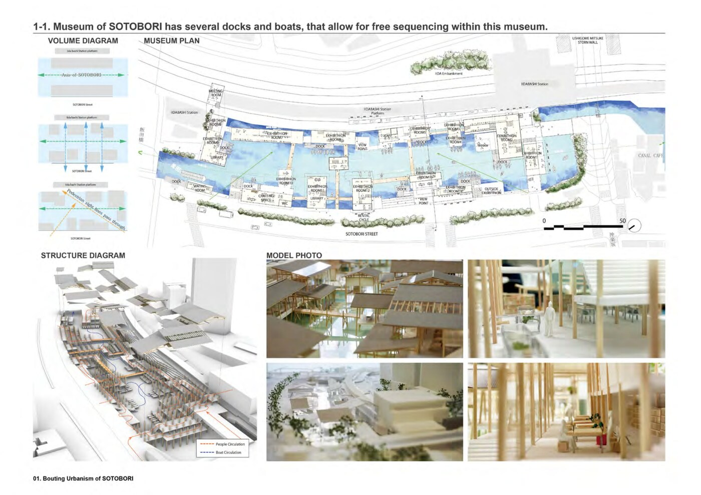
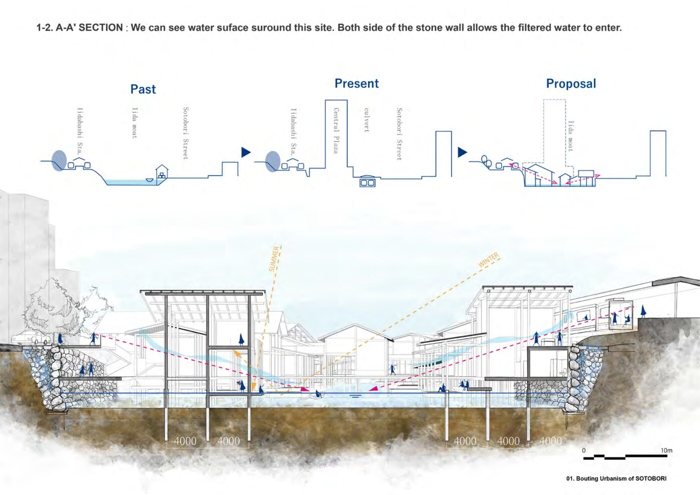
A-A' Section: Past → Present → Proposal — IidabashiA-A'断面図：飯田橋 過去→現在→提案
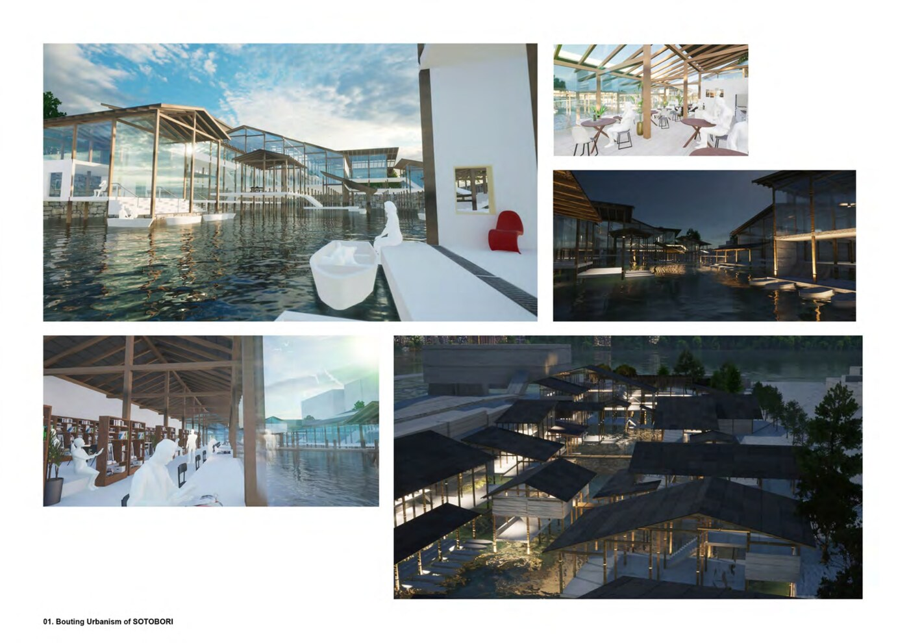
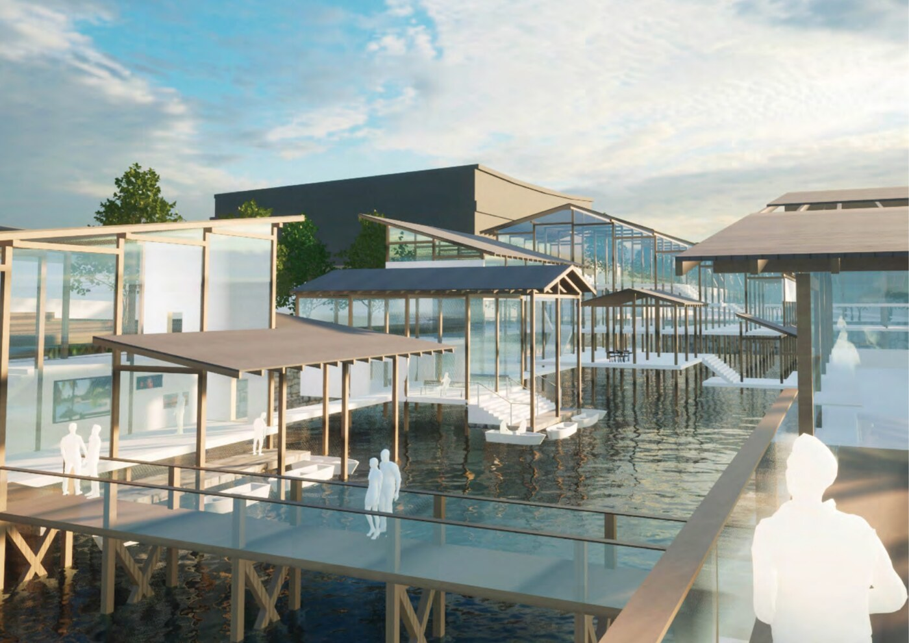
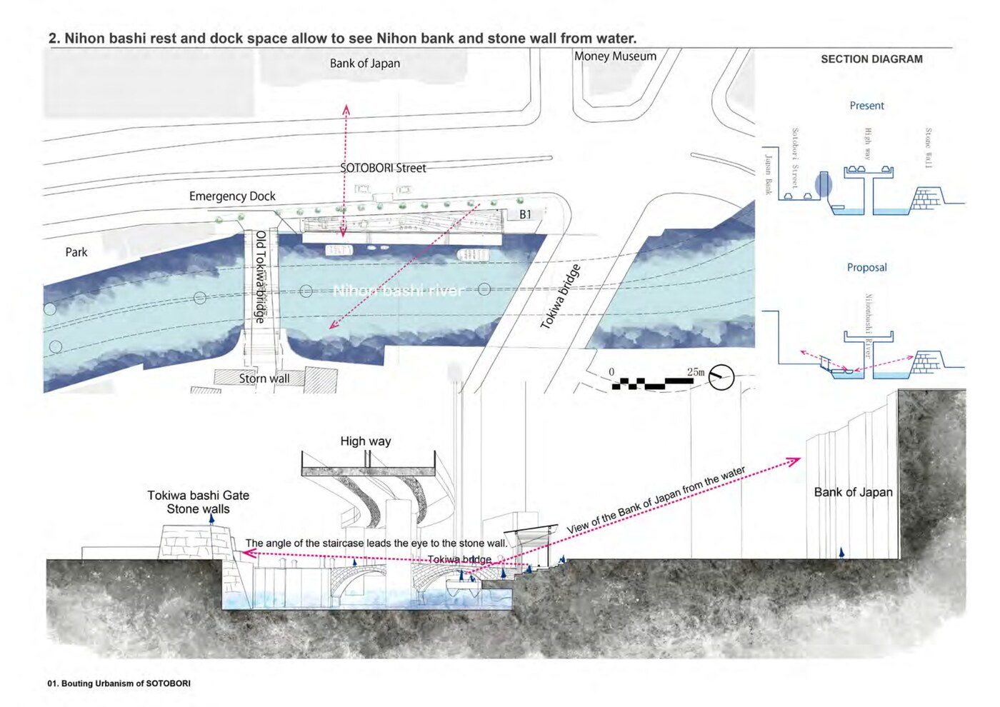
Nihonbashi River: rest area and dock allowing views of the stone walls from water level日本橋川：石垣を水面から眺める休憩所 + ドック
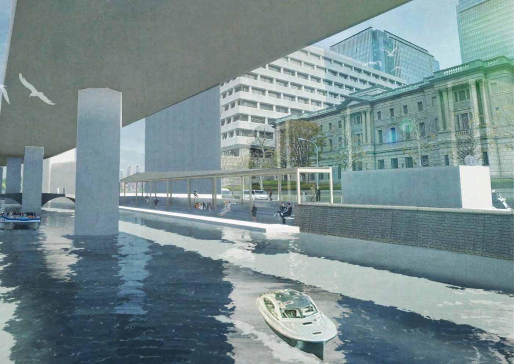
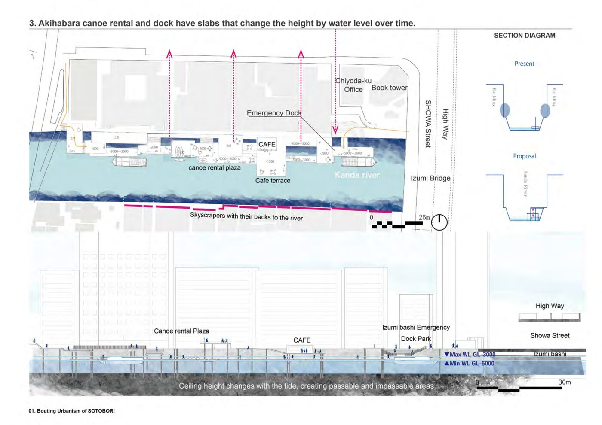
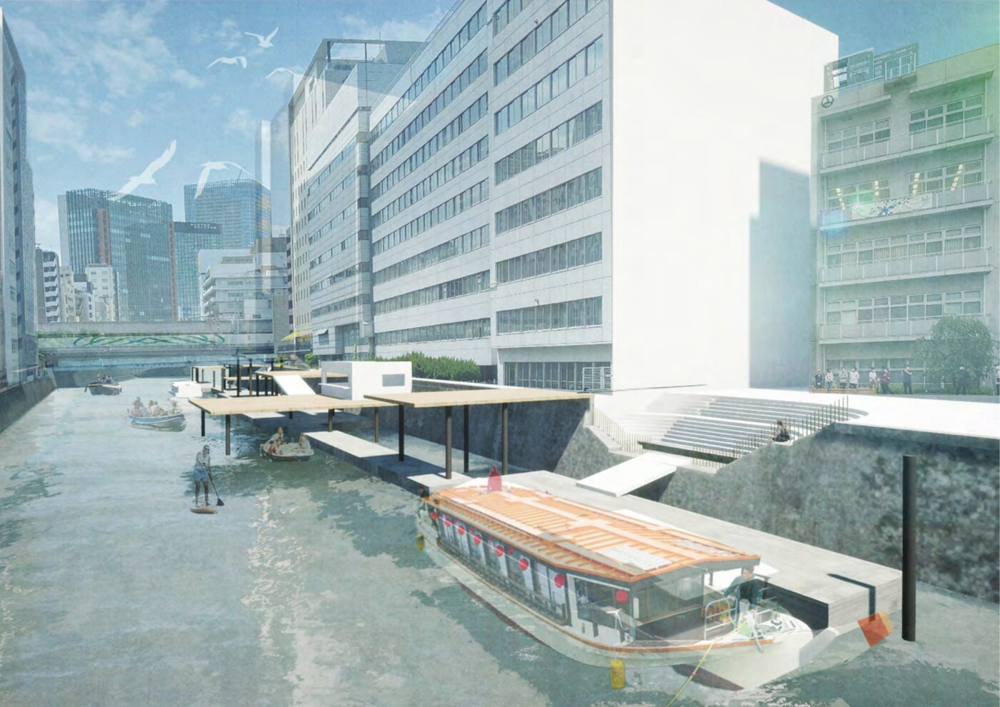
Perspective — approaching Nihonbashi River dock by boatパース — 船で日本橋川ドックに近づく